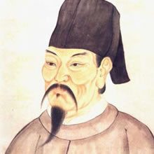
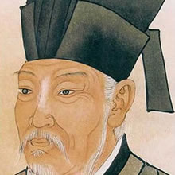
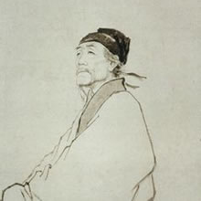
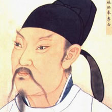

源远流长的中国古代文化，到了隋唐五代时期，发展到了一个全面繁荣的新阶段。从公元581年隋朝建立，到907年唐朝灭亡，是我国历史上著名的隋唐盛世，公元907年， 朱温灭唐自立，历史进入了五代十国时期。直到公元960年，北宋王朝建立，国家由分裂重新走向统一。

李商隐
（约813年-约858年），字义山，号玉溪（谿）生，又号樊南生，祖籍怀州河内（今河南焦作沁阳）[1] ，出生于郑州荥阳（今河南郑州荥阳市），晚唐著名诗人，和杜牧合称“小李杜”，与温庭筠合称为“温李”。

白居易
（772年－846年），字乐天，号香山居士，又号醉吟先生，祖籍太原，到其曾祖父时迁居下邽，生于河南新郑。是唐代伟大的现实主义诗人，唐代三大诗人之一。白居易与元稹共同倡导新乐府运动，世称“元白”，与刘禹锡并称“刘白”。

杜甫
（712年—770年），字子美，汉族，本襄阳人，后徙河南巩县。自号少陵野老，唐代伟大的现实主义诗人，与李白合称“李杜”。为了与另两位诗人李商隐与杜牧即“小李杜”区别，杜甫与李白又合称“大李杜”，杜甫也常被称为“老杜”。

李白
（701年－762年），字太白，号青莲居士，又号“谪仙人”，是唐代伟大的浪漫主义诗人，被后人誉为“诗仙”，与杜甫并称为“李杜”，为了与另两位诗人李商隐与杜牧即“小李杜”区别，杜甫与李白又合称“大李杜”。其人爽朗大方，爱饮酒作诗，喜交友。